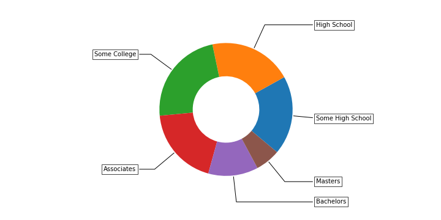
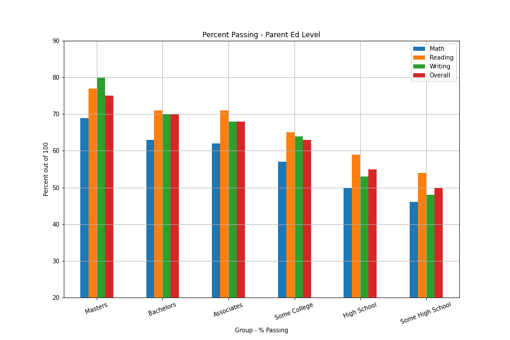
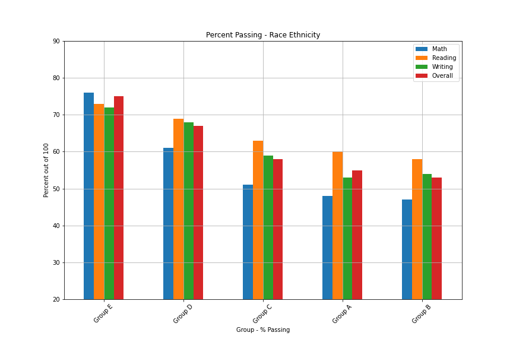
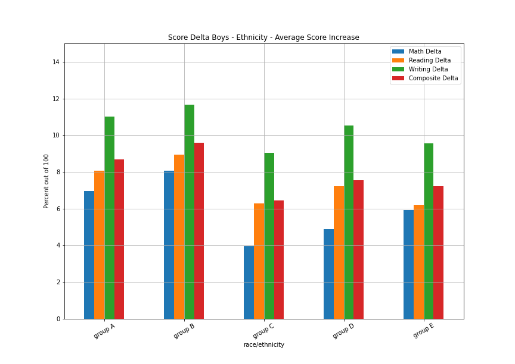
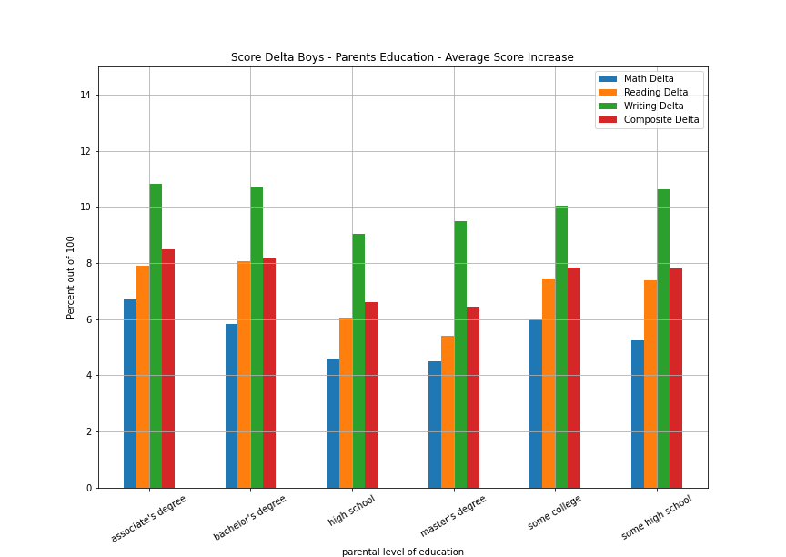

Overview
Student performance is always a primary issue when it comes to education. Parents, teachers, administration, community leaders are always concerned about how well students perform. Much of our tax dollars goes into funding education and everything that it involves. So
what are the primary drivers that determine student success? This project aims to get an idea of what those drivers to success are and what can be done to improve student performance. The data set that we are working with is simulated data that depicts student standardized tests
scores in a ficticious public school. This data includes common metrics that are looked at by education professionals, albeit, given the simulated nature of this data, it is a bit limited in scope. None the less we are able to get a good idea of what this data is telling us with respect
how students perform and why.
The Data
This data comes from a assistant professor at BYU named Royce Kimmons who specializes in the relationship between technology and education.
The link to his website can be found here. http://roycekimmons.com/
Here is the link to the Jupyter Notebook with all the code that generated these images and tables.

This data contains the following columns.
- Gender - This one is pretty self explanitory
- Race/Ethnicity - For the sake of not playing into stereotypes it's randomized.
- Parental Level of Education - This is metric of family support with respect to a student's education.
- Lunch - Whether or not the student recieves free or subsidized lunch as a measure of poverty.
- Test Preparation Course - Exactly what it sounds like. For our purposes we're using it as a metric of intervention in student performance.
- Math score
- Reading score
- Writing score
- Composite score - this is a metric that we generated and it's an average of the previous three.
Overall Test Averages
These were some pretty expected observations that fit into societal stereotyes. The boys overall scored better on average in math. Girls scored better in reading and writing. This data shows a racially based achievement gap between what appear to be the higher achieving groups, those being Groups D and E and the lower achieving groups A and B. When it comes to parental level of education, the scores basically corespond with the parents level of ed -- the higher the parent's achievement the higher the kid's scores tended to be. The most intersting takaway here is that the students who have parents that have completed a degree score pretty significantly higher.
Free/reduced lunch recipients seemed to show a sizeable gab with about an 11% different between their paid lunch classmates. This is a metric that indicates poverty, poverty is definitely an indicator. The test prep course overall appears to help quite a bit as well.

|
math score |
reading score |
writing score |
composite score |
| gender |
|
|
|
|
| female |
63.97 |
72.95 |
72.80 |
69.91 |
| male |
69.35 |
66.51 |
64.38 |
66.75 |

|
math score |
reading score |
writing score |
composite score |
| race/ethnicity |
|
|
|
|
| group A |
63.74 |
67.83 |
65.94 |
65.83 |
| group B |
63.51 |
67.22 |
65.48 |
65.42 |
| group C |
64.57 |
69.04 |
67.59 |
67.07 |
| group D |
68.06 |
71.02 |
71.37 |
70.15 |
| group E |
75.07 |
74.29 |
72.52 |
73.96 |

|
math score |
reading score |
writing score |
composite score |
| parental level of education |
|
|
|
|
| associate's degree |
68.94 |
71.92 |
70.99 |
70.62 |
| bachelor's degree |
69.43 |
72.70 |
72.71 |
71.61 |
| high school |
64.44 |
67.63 |
65.59 |
65.90 |
| master's degree |
71.92 |
75.69 |
75.88 |
74.50 |
| some college |
66.52 |
69.71 |
68.96 |
68.40 |
| some high school |
62.91 |
66.02 |
64.05 |
64.32 |

|
math score |
reading score |
writing score |
composite score |
| lunch |
|
|
|
|
| free/reduced |
58.95 |
64.81 |
63.06 |
62.28 |
| standard |
70.76 |
72.49 |
71.71 |
71.66 |

|
math score |
reading score |
writing score |
composite score |
| test preparation course |
|
|
|
|
| completed |
70.254596 |
74.438997 |
75.220056 |
73.312535 |
| none |
64.566927 |
67.185959 |
65.003744 |
65.585335 |
Already we can see an achievement gap between group E and groups A and B. Also there is an education based achievement gap that is particularly large between children with parents that have not finished high school and children with parents that hold an advanced degree. Below are some charts that reflect these findings.The bar graph also clearly shows an economic achievement gap in the lunch chart.
Data By Gender
This series of graphs breaks down the mean test scores by gender vs ethnicity, parent's education, and whether or not the child is getting free lunch. While this series a graphs follows the same trajectory as those prior, two trends become apparent. That is, exactly how much math scores struggle for girls
from more disadvantaged demographics. The same can be said for boys and writing. The more disadvantaged the demographic, the worse the mean score is particularly for children of the least educated parents.

|
Boys Math Mean |
Girls Math Mean |
Boys Reading Mean |
Girls Reading Mean |
Boys Writing Mean |
Girls Writing Mean |
Boys Composite |
Girls Composite |
| race/ethnicity |
|
|
|
|
|
|
|
|
| group A |
66.30 |
61.17 |
64.19 |
71.49 |
61.41 |
70.50 |
63.96 |
67.71 |
| group B |
65.67 |
61.27 |
63.71 |
70.88 |
60.83 |
70.32 |
63.42 |
67.51 |
| group C |
67.76 |
61.78 |
65.71 |
71.95 |
63.39 |
71.26 |
65.63 |
68.33 |
| group D |
70.88 |
65.30 |
68.15 |
73.83 |
67.47 |
75.18 |
68.84 |
71.43 |
| group E |
77.44 |
72.67 |
70.87 |
77.77 |
67.96 |
77.17 |
72.08 |
75.86 |

|
Boys Math Mean |
Girls Math Mean |
Boys Reading Mean |
Girls Reading Mean |
Boys Writing Mean |
Girls Writing Mean |
Boys Composite |
Girls Composite |
| parental level of education |
|
|
|
|
|
|
|
|
| associate's degree |
71.58 |
66.31 |
68.70 |
75.15 |
66.67 |
75.30 |
68.98 |
72.26 |
| bachelor's degree |
72.34 |
66.51 |
69.58 |
75.82 |
68.78 |
76.63 |
70.25 |
72.98 |
| high school |
67.35 |
61.62 |
64.52 |
70.66 |
61.48 |
69.59 |
64.47 |
67.28 |
| master's degree |
74.98 |
69.14 |
71.96 |
79.08 |
71.71 |
79.68 |
72.88 |
75.97 |
| some college |
68.96 |
64.29 |
66.01 |
73.11 |
64.22 |
73.31 |
66.39 |
70.24 |
| some high school |
65.73 |
60.17 |
63.07 |
68.90 |
59.89 |
68.10 |
62.88 |
65.72 |

|
Boys Math Mean |
Girls Math Mean |
Boys Reading Mean |
Girls Reading Mean |
Boys Writing Mean |
Girls Writing Mean |
Boys Composite |
Girls Composite |
| lunch |
|
|
|
|
|
|
|
|
| free/reduced |
62.31 |
55.82 |
62.06 |
67.37 |
59.35 |
66.52 |
61.25 |
63.24 |
| standard |
73.06 |
68.50 |
68.86 |
76.05 |
67.04 |
76.30 |
69.66 |
73.62 |

|
Boys Math Mean |
Girls Math Mean |
Boys Reading Mean |
Girls Reading Mean |
Boys Writing Mean |
Girls Writing Mean |
Boys Composite |
Girls Composite |
| test preparation course |
|
|
|
|
|
|
|
|
| completed |
72.98 |
67.57 |
71.15 |
77.68 |
70.94 |
79.44 |
71.70 |
74.90 |
| none |
67.28 |
61.98 |
63.86 |
70.35 |
60.65 |
69.15 |
63.93 |
67.16 |
These charts mostly reinforce what is discussed at the beginning. Something that is notable is that with the exception of math, girls tend to produce better test scores. That is true across all demographics, at least according to this data. Something that we believe is of note is that the reading score seem sto be very closely correlated with writing. If the reading score is good, so is writing.
Demographic Breakdown
Distribution of students - Parent's Education level

Distribution of students - Ethnicity

Passing Rate - Parent's Education level

|
Math |
Reading |
Writing |
Overall |
| Group - % Passing |
|
|
|
|
| Masters |
69.0 |
77.0 |
80.0 |
75.0 |
| Bachelors |
63.0 |
71.0 |
70.0 |
70.0 |
| Associates |
62.0 |
71.0 |
68.0 |
68.0 |
| Some College |
57.0 |
65.0 |
64.0 |
63.0 |
| High School |
50.0 |
59.0 |
53.0 |
55.0 |
| Some High School |
46.0 |
54.0 |
48.0 |
50.0 |

|
Math |
Reading |
Writing |
Overall |
| Group - % Passing |
|
|
|
|
| Group E |
76.0 |
73.0 |
72.0 |
75.0 |
| Group D |
61.0 |
69.0 |
68.0 |
67.0 |
| Group C |
51.0 |
63.0 |
59.0 |
58.0 |
| Group A |
48.0 |
60.0 |
53.0 |
55.0 |
| Group B |
47.0 |
58.0 |
54.0 |
53.0 |
Here we can see some pretty expected results. The highest percent passing with respect to partental level of education are children of parents who hold a masters degree.
Remarkably though, it seems like children with parents who haven't finished high shool are still showing a 50% passing rate and are still passing over half of that group in reading at 54%.
Ethnicity shows a pretty pronounced achievement gap between Group E being the highest achievers and Group B bringing up the rear. Likely this has to do with financial and parental support.
None the less, even in the most disadvantaged group, almost 60% of students are still passing.
Lunch
This is an indicator of poverty. This section focuses on the effect of poverty through examining the differences between performance in children who recieve free or subsidized lunch and children who's families pay for lunch.
| Group - % Reduced Lunch |
Group Total |
Count |
Percentage |
| Group A |
417 |
152 |
36.0 |
| Group C |
1575 |
571 |
36.0 |
| Group B |
1025 |
356 |
35.0 |
| Group D |
1313 |
455 |
35.0 |
| Group E |
670 |
224 |
33.0 |
| Group - % Reduced Lunch |
Group Total |
Count |
Percentage |
| Masters |
319 |
125 |
39.0 |
| Bachelors |
618 |
231 |
37.0 |
| Some College |
1160 |
416 |
36.0 |
| Some High School |
931 |
321 |
34.0 |
| High School |
999 |
340 |
34.0 |
| Associates |
973 |
325 |
33.0 |

|
RDC Math Score |
STD Math Score |
RDC Reading Score |
STD Reading Score |
RDC Writing Score |
STD Writing Score |
RDC Composite |
STD Composite |
| parental level of education |
|
|
|
|
|
|
|
|
| master's degree |
65.44 |
76.10 |
72.11 |
77.99 |
71.48 |
78.72 |
69.65 |
77.62 |
| bachelor's degree |
62.33 |
73.66 |
68.55 |
75.18 |
67.80 |
75.64 |
66.23 |
74.83 |
| associate's degree |
60.91 |
72.97 |
66.85 |
74.47 |
65.11 |
73.94 |
64.30 |
73.79 |
| some college |
58.76 |
70.86 |
64.67 |
72.53 |
63.39 |
72.07 |
62.29 |
71.82 |
| high school |
56.61 |
68.48 |
62.33 |
70.36 |
59.74 |
68.61 |
59.58 |
69.15 |
| some high school |
54.74 |
67.21 |
60.02 |
69.18 |
57.37 |
67.56 |
57.36 |
67.98 |

|
RDC Math Score |
STD Math Score |
RDC Reading Score |
STD Reading Score |
RDC Writing Score |
STD Writing Score |
RDC Composite |
STD Composite |
| race/ethnicity |
|
|
|
|
|
|
|
|
| group E |
67.22 |
79.02 |
69.50 |
76.70 |
67.24 |
75.17 |
67.99 |
76.95 |
| group D |
59.85 |
72.41 |
65.83 |
73.78 |
65.82 |
74.31 |
63.85 |
73.49 |
| group C |
57.98 |
68.33 |
64.71 |
71.50 |
62.36 |
70.56 |
61.69 |
70.13 |
| group A |
55.93 |
68.22 |
62.41 |
70.93 |
59.80 |
69.46 |
59.34 |
69.55 |
| group B |
55.46 |
67.80 |
61.73 |
70.14 |
59.41 |
68.70 |
58.87 |
68.91 |
It doesn't matter the level of education. There's a huge difference in scores between children receiving reduced lunch and children recieving paid lunch. Especially in math. According to this data.
Test Preparation
This examines the effect of the test prep course on scores. We will try to use the data that were created above to examine the effect on test scores in various circumstances. This data shows that about 35% of students take the test.
| Group |
Completion Percentage |
| Group A |
36.0 |
| Group B |
34.0 |
| Group C |
36.0 |
| Group D |
37.0 |
| Group E |
37.0 |
|
|
| Some High School |
35.0 |
| High School |
34.0 |
| Some College |
36.0 |
| Associates |
37.0 |
| Bachelors |
37.0 |
| Masters |
39.0 |

|
yes Math Score |
no Math Score |
yes Reading Score |
no Reading Score |
yes Writing Score |
no Writing Score |
Yes Composite |
no Composite |
| parental level of education |
|
|
|
|
|
|
|
|
| associate's degree |
72.74 |
66.67 |
76.65 |
69.10 |
77.46 |
67.12 |
75.61 |
67.65 |
| bachelor's degree |
72.48 |
67.67 |
77.00 |
70.22 |
78.84 |
69.17 |
76.10 |
69.03 |
| high school |
67.99 |
62.65 |
72.02 |
65.40 |
72.04 |
62.32 |
70.72 |
63.45 |
| master's degree |
74.93 |
69.99 |
80.16 |
72.80 |
82.17 |
71.83 |
79.07 |
71.55 |
| some college |
69.98 |
64.55 |
73.99 |
67.27 |
74.95 |
65.55 |
72.98 |
65.79 |
| some high school |
66.80 |
60.84 |
71.04 |
63.36 |
71.15 |
60.28 |
69.67 |
61.47 |

|
yes Math Score |
no Math Score |
yes Reading Score |
no Reading Score |
yes Writing Score |
no Writing Score |
Yes Composite |
no Composite |
| race/ethnicity |
|
|
|
|
|
|
|
|
| group A |
68.43 |
61.10 |
72.78 |
65.04 |
72.87 |
62.04 |
71.35 |
62.73 |
| group B |
68.05 |
61.20 |
72.83 |
64.36 |
72.94 |
61.67 |
71.29 |
62.43 |
| group C |
68.06 |
62.60 |
73.57 |
66.47 |
74.01 |
63.94 |
71.90 |
64.33 |
| group D |
70.95 |
66.38 |
75.35 |
68.51 |
77.64 |
67.74 |
74.64 |
67.54 |
| group E |
78.16 |
73.27 |
77.93 |
72.17 |
77.92 |
69.37 |
78.00 |
71.60 |

|
Math Delta |
Reading Delta |
Writing Delta |
Composite Delta |
| race/ethnicity |
|
|
|
|
| group A |
6.96 |
8.06 |
11.03 |
8.68 |
| group B |
8.06 |
8.95 |
11.66 |
9.58 |
| group C |
3.96 |
6.29 |
9.05 |
6.46 |
| group D |
4.90 |
7.23 |
10.54 |
7.56 |
| group E |
5.91 |
6.17 |
9.55 |
7.21 |

|
Math Delta |
Reading Delta |
Writing Delta |
Composite Delta |
| race/ethnicity |
|
|
|
|
| group A |
7.12 |
8.36 |
11.84 |
9.09 |
| group B |
5.71 |
7.81 |
10.64 |
8.03 |
| group C |
6.54 |
8.12 |
11.36 |
8.71 |
| group D |
4.45 |
6.29 |
9.02 |
6.57 |
| group E |
3.61 |
5.64 |
7.92 |
5.73 |

|
Math Delta |
Reading Delta |
Writing Delta |
Composite Delta |
| parental level of education |
|
|
|
|
| associate's degree |
6.69 |
7.92 |
10.84 |
8.49 |
| bachelor's degree |
5.83 |
8.08 |
10.72 |
8.18 |
| high school |
4.59 |
6.04 |
9.03 |
6.60 |
| master's degree |
4.50 |
5.42 |
9.50 |
6.45 |
| some college |
6.00 |
7.44 |
10.04 |
7.84 |
| some high school |
5.24 |
7.40 |
10.64 |
7.80 |
|
Math Delta |
Reading Delta |
Writing Delta |
Composite Delta |
| parental level of education |
|
|
|
|
| associate's degree |
5.55 |
7.08 |
9.70 |
7.39 |
| bachelor's degree |
3.79 |
5.50 |
8.61 |
5.96 |
| high school |
5.96 |
7.33 |
10.55 |
7.99 |
| master's degree |
5.71 |
8.62 |
10.60 |
8.28 |
| some college |
4.61 |
6.48 |
9.37 |
6.82 |
| some high school |
6.47 |
8.16 |
11.38 |
8.71 |
Machine Learning
Decision Tree
We ran data through this model to look look for a correlation between passing subjects. What we found, according to this model was a couple things. The first has to do with passing math. According to this decision tree,
if a student passes writing, there's correlation of 76% that the student is also passing math. Likewise if a student is passing writing, there is a 100% chance that the student is passing reading, according to this model.
Decision Tree Notebook
Random Forest
When running the data through a random forest we were able to see correleations between success in reading/writing and passing math. Between the factors of reading and writing, that will predict math success by 76%.
When it comes to predicting reading success, writing and math account for 94% of predicting reading success, that includes 68% from writing alone.
Random Forest Notebook
Logistic Regression
This was where we were attempting to predict success in a class by feeding the model a bunch of training data. The model was able to predict whether or not a student will pass 82% of the time.
The other two subjects were predected 100% correct. Generally if a student is passing reading they're passing writing and vise versa.
Logistic Regression Notebook
Conclusions
As stated early on, this data is not real data, it is artificially generated. The conclusions below are solely based on what is included in this dataset. We have no idea if these numbers are in any way true to life and are more than receptive to hearing feedback as to what student performance
in a real school district would look like. So that being said, here is what we've been able to see based on the data analysis above.
- The more educated the parent, the better the child tends to perform from the standpoint of testing.
- Poverty appears to be the biggest outside hinderence to academic success, at least when it comes to the test scores in this data.
- The test prep course helps, in some cases it helps a lot. The biggest benefit appears to be in writing scores.
- According to this data, boys tend to struggle the most with writing and the girls tend to struggle the most with math